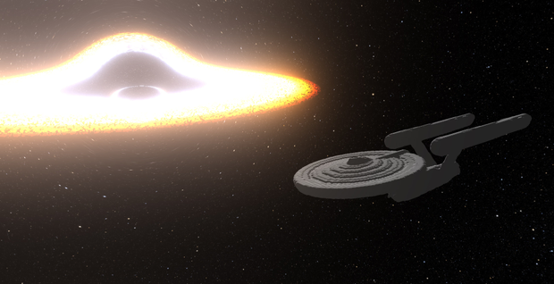
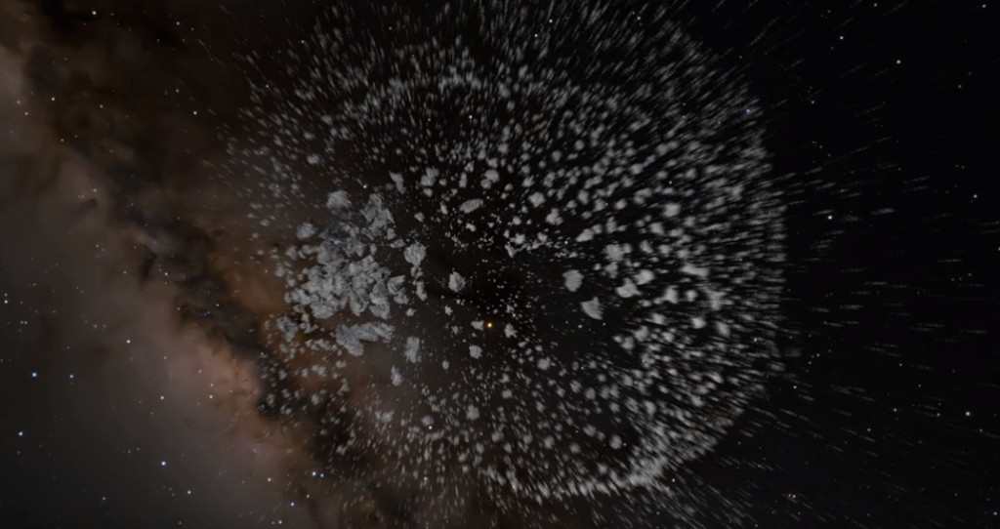
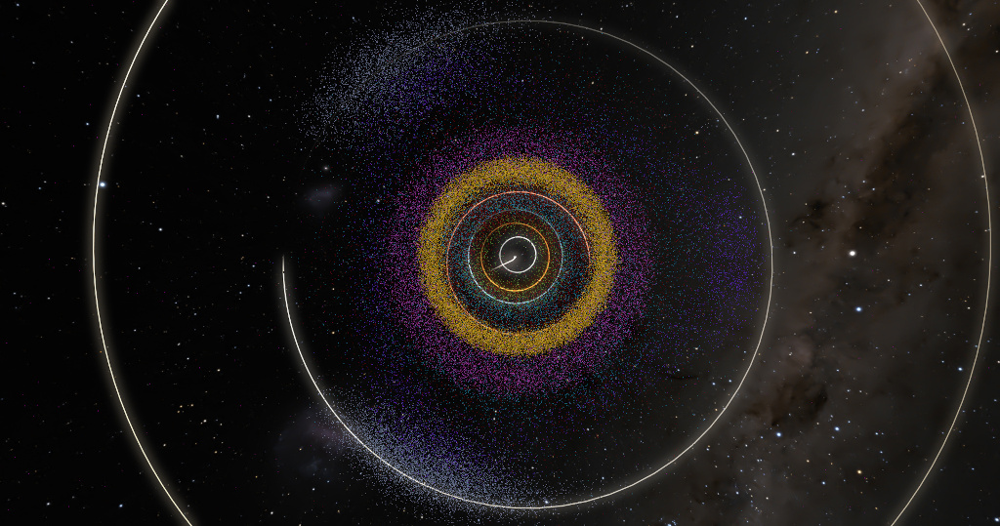
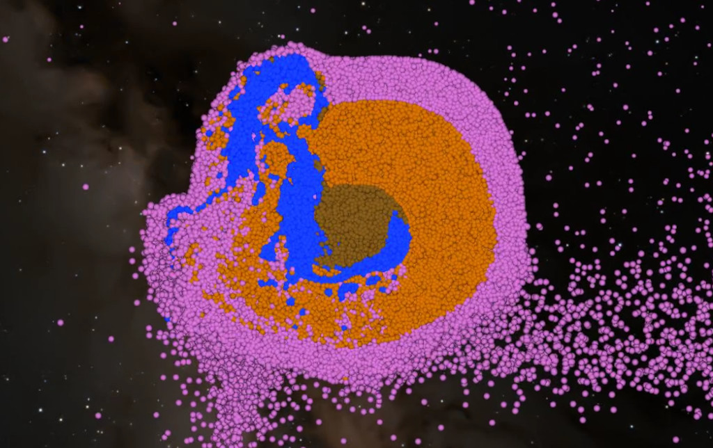

Changelog
Update 0.4
Download build

- New physically based bloom effect with much larger radius and overall more realistic look.
- Improved rendering of black holes when using the raymarcher. Black holes now distort the light emitted by particles and the background, creating gravitational lensing.
- Added shadows to raymarcher. The renderer now calculates shadows casted by individual particles, occluding the directional light.
- Video can now be rendered at any resolution and framerate.
- Cohesion has been added to all shaped objects.
- Planetary rings and accretion disks can now be elliptical and have customizable particle temperatures.
- Added material selection for group objects (free group and orbiting group).
- Added collision prediction to the integrator. When enabled, the time step is automatically adjusted to properly handle collisions of fast-moving objects.
- Added an alternative periodic gravity solver, based on Fast Fourier Transform (FFT).
- Particles can now be stabilized when using the SPH solver, similarly as in OpenSPH.
- Added a visualization of Roche limits to the real-time renderer.
- Added a handheld camera, new type of camera that allows to record and later replay custom camera path.
- Cameras can now be easily selected using the next/previous buttons on the camera page.
- Added a few presets - DART, high speed cratering, igniting stars, Sagittarius A* and spaceship hit by missile.
- Added asteroid (216) Kleopatra.
- Objects can now be saved to a custom object library. Objects added to the library appear at the bottom of the object list.
Update 0.3
Download build

- Adds an option for asteroids to simulate cohesion between particles, connecting them into chunks that move and rotate as a rigid body.
- Chunks and fault planes in asteroids can be visualized using new color modes "Fragment" and "Activation strain", respectively.
- Particle noise is now suppressed using artificial viscosity when using the IISPH solver.
- Added antialiasing for raytracer.
- Added motion blur for raytracer, effect that blurs particles along the velocity vector.
- Both antialiasing and motion blur are done by averaging multiple frames, set by 'iteration count' in render settings.
- When using the raytracer, the image is now split into square blocks and rendered over several frames, making the UI more responsive and preventing crashes due to GPU timeout.
- New simulation option for black holes, creating a jet of particles when it absorbs matter. The jet is perpendicular to the plane in which the particle moved, creating a quasar-like appearance.
- The preset 'Accretion disk' was updated to show this effect.
- Stars now have variable surface temperature, showing irregular emission patterns and darker regions resembling sunspots. Sunspots can be turned off in the simulation parameters of the star.
- Added an option to create a video from the simulation cache stored in history. The app will load every simulation snapshot stored in the history and render an image using current camera and render settings.
- Added palette presets, used for color modes and for "cloud-based" objects (molecular clouds and galaxies).
- Object 'asteroid field' was replaced by two objects, 'free group' and 'orbiting group'.
- Added an ellipsoid and a potatoid (generic customizable shape).
- Added a new font with better legibility of numbers.
Update 0.2.9
Download build

- Non-deformable objects can now absorb particles, enabled by setting 'particle interaction' to 'absorb'.
- Absorbed particles transfer their mass to the absorber.
- Black holes are now always absorbing particles.
- Galaxies and globular clusters now use the global particle count, set in the simulation settings.
- Each object has a 'particle budget', used to determine the particle count; for galaxies, each component - disk, halo, and bulge - has a separate budget.
- Added 'intensity' to galaxies and clouds, used to adjust the emission of each object.
- Created a simulation "Asteroids in Solar System", showing all asteroids in the Minor Planet Center database, along with the Sun and all planets.
- Added "Origin of the Moon" simulation preset.
- "Cloud-based" objects (molecular clouds and galaxies) are now properly stored in history.
- Fixed switching color modes and clip modes while the simulation is paused.
- Fixed various crashes, glitches and NaN values.
- Also improved the crash reporting, hopefully fixing more crashes in the next update.
Update 0.2.8
Download build

- You can now send feedback or bug report from the app using "About > Send feedback" in the menu.
- Added option to share the simulation on Discord, using "File > Share on Discord". The simulation will appear in the channel #beta-simulations .
- The app will now attempt to send basic report (simulation info, log file) in case it crashes. You can opt-out of crash reporting under "File > Preferences".
- Planets can now have up to four layers - core, mantle, crust and atmosphere.
- Added option to specify material for each layer. Currently, there is a fixed list of materials (basalt, olivine, iron, water, hydrogen, helium, nitrogen).
- When the color mode is set to "material", each particle is colored by its material and a legend listing the material names is shown.
- Clicking on a body during simulation will display a pie chart of its material composition.
- Added a new object type - black holes. They are non-deformable spherical objects, having only one physical parameters - their mass.
- Added Sagittarius A* and M87 as presets.
- Improved the calculation of nuclear fusion, fixing some stars having zero fusion power.
- Stars can now display their effective temperature, absolute magnitude and spectral type during the simulation.
- Added Proxima Centauri as a preset.
- Randomization of molecular clouds is now stable and will always give the same result for given random seed.
- Grid used to calculate periodic gravity now has automatic resolution, based on the number of particles. The resolution can be overridden if needed.
- Trajectories showing predicted paths of objects during setup are shown for all objects except for rings.
- Application icon now shows the current simulation progress.
- Added "Core-collapse supernova" simulation preset.